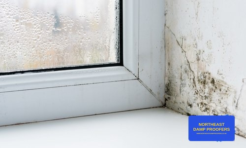

Damp advice
Damp or mould around a window? Condensation, cold reveals or a leak
Short answer: damp or black mould around a window is usually one of three things. Most often it's condensation: the glass and the plaster beside it (the reveal) are the coldest surfaces in the room, so moisture settles there first. Next most common is a cold reveal, where the wall around the frame is colder than the rest of the wall, so mould keeps coming back in the same corners. The third is a leak: rain getting in around the frame, under the sill or from above the window. Watch when it gets worse. Cold mornings point to condensation. Wet, windy days point to a leak.

Why windows are where it starts
When warm, moist air from cooking, showers, drying washing and breathing meets a cold surface, it turns back into water. In most rooms the window is the coldest thing there, and the plaster right next to the frame isn't far behind. That's why, every winter across the North East, the first mould in a bedroom so often turns up in the corners of the window reveal, on the sill, or along the bottom of the frame where water runs off the glass.
Sign 1: it's condensation
- Water on the inside of the glass in the morning, running down onto the sill
- Black mould spots on the sealant, the bottom of the frame, and the corners of the reveal
- Worst in bedrooms, kitchens and bathrooms, and behind curtains or blinds that stay shut
- Worse in cold, still weather and better in summer
Our guide to black mould in winter goes into telling condensation apart from other types of damp.
Sign 2: it's a cold reveal
Sometimes the room isn't especially humid, but the plaster around the frame is noticeably colder than the rest of the wall, and mould keeps coming back in the same strip of the reveal however often you clean it.
Common reasons in North East homes:
- Cavity walls. In many cavity-walled houses the cavity is closed around the window opening with brick or block, so there's no air gap or insulation at that point. Heat escapes faster there and the inside face stays colder.
- Solid-walled terraces. In older brick and stone terraces the wall beside a window can be thin and very cold, especially at the top corners near the lintel.
- Insulated walls but bare reveals. If a room has had insulated plasterboard fitted but the reveals were left plain plaster, they become the cold spot.
Sign 3: it's a leak
Rain getting in looks different: a damp patch or brown stain that spreads after heavy or wind-driven rain, then fades as things dry out. Typical routes in:
- Perished sealant around the outside of the frame, letting water run in behind it
- Sills that are cracked, slope back towards the wall, or have no drip groove underneath, so water tracks back into the brickwork. Old stone sills on Tyneside terraces are a regular culprit.
- Above the window. In a cavity wall, a cavity tray over the lintel should catch water and send it out through weep holes. If it's missing, damaged or the weep holes are blocked, damp shows above the window or in its top corners after rain. Rusting steel lintels can also crack the brickwork and let water in.
- Bay windows, where the small roof, leadwork and joints around the bay can all let water in
If this sounds like yours, our guide to the damp patch after heavy rain covers penetrating damp in more detail.
New windows and more condensation
Many people notice more condensation after getting new double glazing. New windows are far less draughty, so moist air that used to escape through gaps stays in, especially if there are no trickle vents or they're kept shut.
Building Regulations guidance in England (Approved Document F) says replacing windows shouldn't leave a home less ventilated than before. If the old windows had trickle vents, the new ones should have them too, and no smaller. If they didn't, ventilation still has to be no worse than before the work. If you're having windows replaced, ask your installer how they're meeting that.
What you can do yourself
- Wipe the glass and sill dry each morning and wring the cloth out in the sink
- Keep trickle vents open, especially in bedrooms overnight
- Open blinds and curtains during the day so air can reach the window
- Keep the heating low and steady rather than blasting it on and off
- Clean mould off properly. Our guide to cleaning black mould safely explains how.
- From outside, look for gaps in the sealant, a sill with no drip groove, and blocked weep holes above the window
What not to do: don't just paint over the mould, and don't seal the trickle vents shut to stop a draught. Both make the problem worse.
What a proper fix looks like
- Condensation: better ventilation in the room, such as continuous-running extract fans or a positive input ventilation unit, along with steadier heating
- Cold reveals: a thin insulated lining on the reveal, where there's enough frame showing to fit it, so the surface stays warmer
- Leaks: resealing the frame, repairing or replacing the sill, clearing weep holes, or building work to a lintel or cavity tray. These are repairs to the outside of the building, not something a damp-proof course will fix.
Renting? Repairs to the outside of the building, including window frames, are normally the landlord's job. Our guide to tenants' rights on damp and mould covers what to do if it isn't being fixed.
When to get a survey
Get it looked at if you can't tell whether it's condensation or a leak, if it persists after a few weeks of good ventilation, if plaster is staining or crumbling around the window, or if someone is recommending expensive treatment without explaining the cause. A survey with moisture readings, inside and out, tells you which problem you've got.
I'm a PCA Qualified Technician in Damp and Timber, and with Dan, who's based in Durham, we carry out damp surveys across Newcastle, Gateshead, Sunderland, Durham, Tyneside and Northumberland. Book an inspection or call 07366 312425.
Common questions
Is condensation on the inside of windows normal?
A little on very cold mornings is common, especially in bedrooms. If it's streaming down the glass every day, pooling on the sill, or mould is growing on the frame and reveals, the room has too much moisture and not enough ventilation, and it's worth sorting before it spreads.
Why is there mould on my window reveal but nowhere else?
Usually because the reveal is the coldest part of the wall. Around many window openings the wall is thinner, or the cavity is closed with no insulation, so the plaster there is colder and moisture settles on it first. A cold reveal can need insulating as well as better ventilation.
How can I tell if my window is leaking or it's just condensation?
Watch the timing. Condensation is worst on cold, still mornings and shows as droplets and speckled mould. A leak gets worse after heavy or wind-driven rain, shows as a spreading stain, often from a top corner or under the sill, and can be damp even when the room isn't humid.
Not sure what's causing your damp?
Book a damp survey with a PCA Qualified Technician. Moisture readings, a clear diagnosis and a written report.